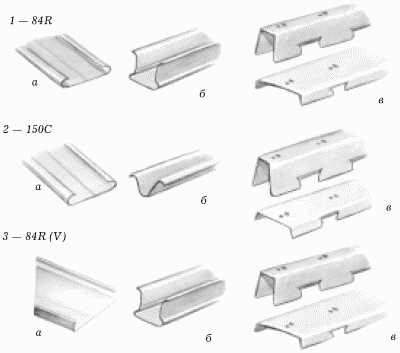
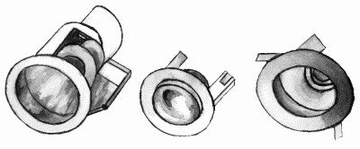
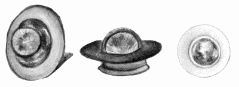
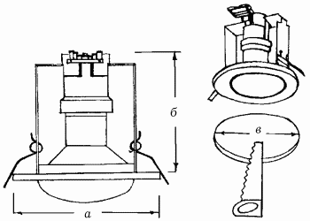
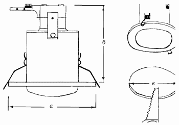
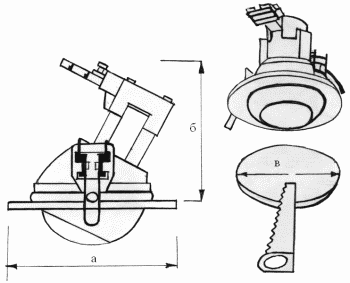
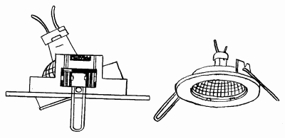
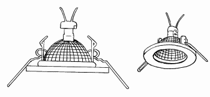
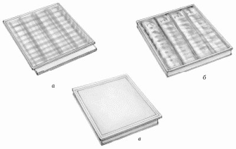

Характеристики реечных потолков закрытого типа.

Основное отличие потолка закрытого типа от открытого заключается в отсутствии открытого пространства между декоративными панелями. Потолок закрытого типа полностью скрывает внешние коммуникации – противопожарные, электрическую проводку.
Реечные закрытые потолки выпускаются следующих типов (рис. 40):
– 84R;
– 15 °C;
– 84R (V).

Рис. 40. Модели потолков закрытого типа: 1 – 84R; 2 – 15 °C; 3 – 84R (V); а – потолочная панель; б – стрингер; в – закрывающий профиль.
К модели 84R относится профиль шириной 84 мм, с промежуточным профилем П-образной формы, шириной 16 мм.
К модели потолка 84R (V) относят широкий профиль шириной 84 мм, промежуточный профиль V-образной формы, шириной 16 мм. Указанные выше типы подвесных реечных потолков различаются по дизайну, но совмещаются с помощью стрингера R (подвесной системы), одинакового для всех типов.
Для моделирования арок, волн и переходов между различными по высоте уровнями в реечном потолке закрытого типа применяется радиусный стрингер AR.
Комплект подвесного потолка закрытого типа 15 °C включает в себя профили шириной 150 мм, крепление которых на стрингер производится стык в стык.
Светильники для подвесных потолковДля подвесных реечных потолков любые светильники не подойдут. Вам придется покупать точечные (рис. 41) или растровые светильники. Обязательно следует позаботиться об этом заранее: известен случай, когда в квартире уже были установлены потолки, после чего хозяева спохватились, что забыли про светильники.

Рис. 41. Точечные светильники для подвесных реечных потолков.
Светильники обычно подбирают под цвет основного потолка: белые, хромовые или под золото. В ванной комнате следует установить лампочки со специальным колпачком, предохраняющим от влаги.
Точечные потолочные светильники бывают поворотными и неповоротными.
В поворотных светильниках (рис. 42) верхняя часть арматуры подвижная, позволяющая сфокусировать световой поток в нужном направлении. Неповоротные светильники этого преимущества лишены: они могут освещать только определенный участок квартиры.

Рис. 42. Виды поворотных точечных светильников.
На российском рынке строительных материалов можно приобрести импортные светильники под галогенные и под обычные лампы накаливания. Светильники отечественного производства выпускаются только под лампы накаливания.
Следует знать, что в светотехнике существует показатель защиты светильника IP, указанный в инструкции или на коробке с осветительным прибором. Он состоит из двух цифр, первая из которых показывает защиту от проникновения твердых частиц внутрь конструкции лампочки, а вторая – защищенность от влаги.
Значения первой цифры:
1 – размером от 50 мм;
2 – от 12 мм;
3 – от 1 мм;
4 – от 1 мм;
5 – защита от пыли;
6 – полная защита от пыли;
0 – защита отсутствует.
Значения второй цифры:
1 – от вертикально падающих капель;
2 – от капель, падающих под углом 15°;
3 – от брызг, падающих под углом 60°;
4 – от брызг;
5 – от водяных струй;
6 – от мощных водяных струй;
7 – от кратковременного погружения в жидкость;
8 – от длительного погружения в жидкость;
0 – защита отсутствует.
Например, в инструкции указан показатель IP-68, значит, светильник полностью защищен от пыли и от длительного погружения в воду.
В том случае, если показатель защиты в инструкции не указан, это означает, что защиты от влаги в нем нет. Однако в ванной комнате устанавливать его все-таки можно: согласно принятым техническим правилам ванная и душ в квартирах классифицируются как сухие помещения.
Точечные светильники подразделяются на:
– светильники под лампы накаливания;
– светильники под галогенные лампы.
Светильники под лампы накаливанияЛампа накаливания – это источник света с излучателем в виде тончайшей проволоки из тугоплавкого металла, помещенного в стеклянную колбу. Проволока накаливается электрическим током до температуры 2200–3000 °C.
В точечных потолочных светильниках используются не простые, а зеркальные лампочки: верхняя часть такого светильника ввинчена в потолок, а нижняя покрыта зеркальным слоем. Этот слой выполняет сразу две функции:
– предохраняет конструкцию лампы от перегрева;
– увеличивает яркость светового потока.
Такая лампочка будет работать очень долго. Например, если вы ежедневно проводите около 1 часа в ванной комнате, менять лампочку вам придется раз в 2 года.
Лампы накаливания бывают двух видов:
– открытого, или П-образного (рис. 43);

Рис. 43. Точечный неповоротный светильник под лампу накаливания П-образной формы: а – диаметр светильника; б – глубина установки; в – диаметр отверстия.
– закрытого, с защитным кожухом (рис. 44).

Рис. 44. Точечный неповоротный светильник под лампу накаливания с защитным кожухом: а – диаметр светильника; б – глубина установки; в – диаметр отверстия.
Кожух защищает светильник от конденсата, поэтому его используют и в помещениях с повышенной влажностью.
В том случае, если лампа накаливания перегорит, ее очень легко поменять: просто выкрутить и вкрутить новую, в то время как с галогенной лампы нужно сначала снять фиксирующее кольцо и только потом устанавливать новую лампочку.
У светильников с лампами накаливания (рис. 45) имеется только один очень существенный недостаток: размеры арматуры, которая будет находиться за подвесными плитами, составляют 8–12 см. Если потолок недостаточно высокий, он станет еще ниже.

Рис. 45. Точечный поворотный светильник под лампу накаливания: а – диаметр светильника; б – глубина установки; в – диаметр отверстия.
Светильники с галогенными лампамиГалогенная лампа представляет собой видоизмененную лампу накаливания. От обычной лампочки она отличается следующими признаками:
1. Размер стеклянной колбы галогенной лампы в несколько раз меньше размера лампы накаливания.
2. Нить накаливания галогенной лампочки помещена в колбу, наполненную смесью инертного газа с галогенами (йодом или бромом).
Основное достоинство галогенных источников – высокая мощность при сниженном в 3 раза уровне потребления электроэнергии. Ассортимент галогенных лампочек гораздо больше обычных светильников. К примеру, в точечные светильники вставляют галогенные лампочки с отражателями.
Отражатель – это небольшой конусообразный плафон, покрытый зеркальным слоем. Плафон может быть открытым или с защитным стеклом, предохраняющим лампочку от грязи и пыли. При замене перегоревшего светильника без защитного стекла ни в коем случае нельзя брать новую лампочку голыми руками: колба лампочки сделана из плавленого кварца, на котором обязательно останется жирный отпечаток пальца; жир вызывает кристаллизацию кварца, из-за чего колба разрушается, а лампа перегорает.
Чтобы этого не случилось, новую лампочку нужно держать салфеткой.
Достоинства светильников с галогенными лампами (рис. 46, 47):
– при монтаже подвесной потолок опускается всего на 3–5 см, а значит, эти лампы можно использовать даже в помещениях с невысокими потолками;
– меняют их обычно раз в 10 лет.

Рис. 46. Точечный поворотный светильник под галогенную лампу.

Рис. 47. Точечный неповоротный светильник под галогенную лампу.
Не советуем приобретать лампочки неизвестных вам фирм: например, лампочки азиатского производства скорее всего прослужат не очень долго; чем ниже цена, тем ниже качество. А вот компании „Osram“ и „General Electric“ дают 10-летнюю гарантию на свои светильники.
Галогенные лампочки рассчитаны на 220 и 12 В. Срок службы 220-вольтных лампочек составляет 2000 часов, 12-вольтных – 4000 часов. Однако электрическая проводка в России рассчитана на напряжение в 220 В, а для преобразовывания напряжения с 220 на 12 В требуется трансформатор.
При покупке лампочек продавец поможет вам также выбрать и нужный трансформатор. Для этого мощность используемых лампочек умножается на их количество. Полученный результат означает мощность самого трансформатора.
Советуем приобрести несколько трансформаторов для одного помещения. Дело в том, что, если один из них перегорит, другие будут продолжать работать.
При покупке трансформатора нужно обращать внимание на то, что чаще всего в продаже имеются индукционные и электронные виды трансформаторов.
Индукционные трансформаторы стоят сравнительно недорого, их вес составляет 1,5–2 кг, и специалисты считают их вполне надежными.
Электронные трансформаторы значительно легче и меньше по размерам, но стоят дороже да и выходят из строя чаще.
Кроме того, для них нужно учитывать длину проводов, связывающих лампочки и трансформатор, поскольку на расстоянии 2 м от него начинаются потери мощности за счет сопротивления провода.
Специалисты считают, что точечные потолочные светильники предназначены для освещения небольших помещений.
Корпус точечных светильников изготавливают из металла, стекла, латуни и термопластика. Есть светильники со специальными покрытиями, например полированной латунью, матовой латунью, матовым хромом, черным хромом, бронзой.
Помимо этого, в российских строительных фирмах можно заказать светильники со стеклом разнообразных цветов: изумрудного, бирюзового, лазоревого и пр. Там же вам могут предложить на выбор и конструкции с плафонами в виде треугольника, спирали и даже сосульки, однако цена такого светильника, естественно, возрастает. Можно также заказать расцветку и форму светильника по своему эскизу.
Вставить точечный светильник в рейку нетрудно: надо просто измерить диаметр лампочки и вырезать необходимое отверстие нужного вам размера. Отверстия для растровых светильников делают специальным станком и продают рейку уже с отверстиями. Данная рейка называется экраном.
Экран довольно часто продается в комплекте со светильниками.
Растровые светильники (рис. 48) бывают накладными или встраиваемыми. Накладные используют как для подвесных потолков, так и для обычных (оштукатуренных, из гипсокартона и пр.).

Рис. 48. Виды растровых светильников: а – с белым растром; б – с зеркальным параболическим растром; в – с опаловым рассеивателем.
Существует два стандарта встраиваемых светильников для плиточных подвесных потолков:
– европейский (600 х 600 мм);
– американский (610 х 610 мм).
Экранирующая решетка светильников с белым растром рационально распределяет свет по всему помещению, а параболическая поверхность зеркальной решетки из анодированного алюминия повышает коэффициент использования светового потока; равномерное распределение света не вызывает бликов на экранах мониторов и телевизоров.
Ремонт подвесных потолковДля ремонта подвесного потолка вам потребуются:
– стремянка;
– запасная плита;
– набор инструментов, указанных выше.
Ремонтировать подвесной потолок очень просто: все, что от вас требуется, это вынуть дефективную плиту и вставить новую. Именно поэтому при покупке потолочного покрытия рекомендуется приобретать на одну коробку больше (в одной коробке обычно 14–18 плит, плитки эксклюзивных моделей продаются коробками по 8 шт.).
Главное – приобрести точно такие плиты, в противном случае они будут резко выделяться на потолке. Для того чтобы этого не произошло, запишите название модели потолка, которую вы приобрели.
Следует знать, что подвесные плиточные потолки были придуманы специально для служебных помещений. Исключением являются только потолки фирмы „Armstrong": эта компания выпускает потолочные плиты специально для жилого дома, которые, кстати сказать, так и называются – „Doma“. Монтировать их довольно просто, поскольку крепятся они безо всякого каркаса прямо на базовый потолок с помощью клея или строительного степлера к деревянной обрешетке. Такой потолок забирает всего 1,3 см высоты.
Устранение дефектов плиточного потолкаПровисание отдельных рядов либо отдельных плиток может возникнуть вследствие ослабления подвесных деталей (вертикальных подвесок и согнутых (пружинных) пластин) или деформации крепежных деталей (закладных крюков и крепежных скоб).
Устраняют такие дефекты путем замены отслуживших деталей или подтяжки еще пригодных к использованию.
Провисание всего плиточного потолка. Причина – неправильный выбор материала для горизонтальных направляющих чернового каркаса (излишняя гибкость) либо слишком большой шаг при установке стальных штырей чернового каркаса.
Устранение – замена провисших элементов чернового каркаса.
Возможны дефекты самих плиток: трещины, надломы, сильное загрязнение. В этом случае испорченную плитку удаляют и на ее место устанавливают новую.